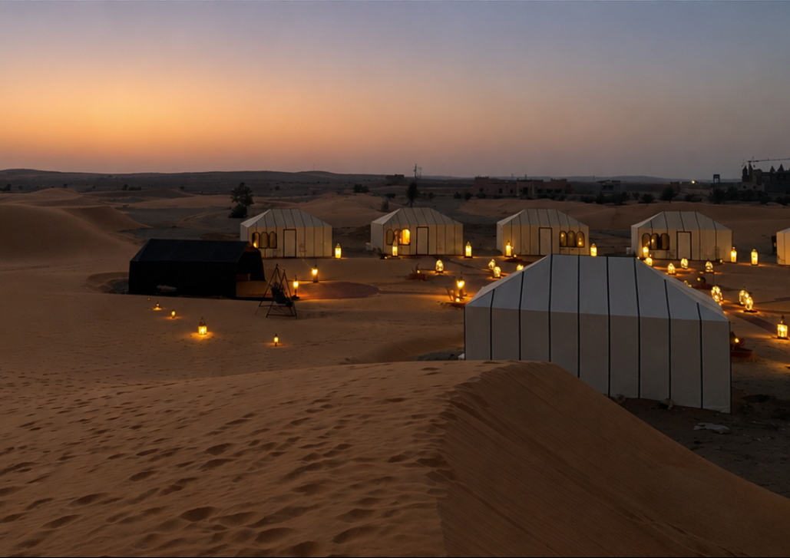

Les dunes de Merzouga
Les grandes dunes de l’Erg Chebbi offrent l’un des paysages les plus spectaculaires du Sahara marocain, particulièrement au lever et au coucher du soleil.
Des médinas aux portes du Sahara, des montagnes de l’Atlas aux côtes de l’Atlantique, le Maroc se découvre entre culture, nature et art de vivre.
✈ Créer mon projet de voyageUne première sélection entre paysages naturels, patrimoine et lieux emblématiques du Maroc.

Les grandes dunes de l’Erg Chebbi offrent l’un des paysages les plus spectaculaires du Sahara marocain, particulièrement au lever et au coucher du soleil.

Villages de montagne, vallées et panoramas minéraux composent un Maroc plus sauvage, idéal pour les randonnées et les escapades nature.

Une cité blanche tournée vers l’Atlantique, connue pour ses remparts, son port, sa médina et son atmosphère paisible.

Le minaret de la Koutoubia domine Marrakech et constitue l’un des monuments les plus reconnaissables de la ville rouge.
Cette ancienne cité fortifiée en terre, aux portes du désert, est l’un des paysages les plus célèbres du Maroc. Ses kasbahs et ses ruelles racontent l’histoire des anciennes routes caravanières.

Servi dans son plat en terre cuite conique, le tajine est l’un des grands symboles de la cuisine marocaine. Poulet aux citrons confits, agneau aux pruneaux ou légumes : ses déclinaisons reflètent la richesse des produits et des traditions culinaires du pays.

Station balnéaire ouverte sur l’Atlantique, entre plage, soleil et paysages du Souss.

Une ville ouverte sur la Méditerranée, entre patrimoine, mer et horizons.